| Date |
Title |
| April 12,2020 |
Bohol
Government
measures
to combat
the threat of Pandemic COVID–19
As measures to combat the
threat of
COVID 19 in the Province of Bohol. The entire Bohol
Province
is now under the community quarantine until April 12, 2020. It was originally planned
starting
24:01 of 16 March until 23:59 of March 20, 2020 with the Executive order No. 8 but
extended
until April 12, 2020.
See More...
Bohol Government measures to
combat the threat of Pandemic COVID–19
Due to persistence of COVID – 19 threat, President Rodrigo
R. Duterte issued proclamation no. 929 declaring a state of
calamity throughout the Philippines due to Corona Virus
disease 2019.
As measures to combat the threat of COVID 19 in the
Province
of Bohol. The entire Bohol Province is now under the
community quarantine until April 12, 2020. It was
originally
planned starting 24:01 of 16 March until 23:59 of March
20,
2020 with the Executive order No. 8 but extended until
April
12, 2020.
Executive Order No. 14, issued on the 18th of
March
2010 by
Governor Arthur C. Yap Extending the suspension
of Domestic
and International air and sea travel of passengers bound
for
Bohol as a measure to combat the threat of of COVID-19
in
the Province until April 12, 2020.
Executive Order No. 13, issued on the 17th of March
2010 by
Governor Arthur C. Yap Ordering a Province-Wide
curfew in
the entire Province of Bohol in order to further address
the
ongoing threat of COVID-19. The province-wide curfew
starts
from 21:00 until 05:00 of the following day. The
Province-Wide curfew shall apply to all establishment
and
individuals in the province subjects to the following
exceptions, to wit:
1. Pharmacies
2. Employees or workers of telecommunications,
electricity and
water utilities doing maintenance or emergency repair
work.
3. Medical personnel such as but not limited to medical
doctors, nurses, medical technicians and other similar
personnel who are on duty at the time of curfew.
4. Land, air and sea travel of uniformed personnel for
official
business especially those transporting medical supplies,
laboratory, specimens related to the COVID-19 and other
humanitarian assistance, shall also be allowed.
5. Life threatening emergency cases
Executive Order No. 15: Province-wide mandatory
use of face
mask at all times in all public places starting on March
25,
2020 at 5:00 am.
Executive Order No. 16: Province-wide 24 hours
curfew for
ages 65 years old and above, and below 18 years old
starting
on March 23, 2020.
1. These persons may leave their households only for
medical
emergencies, or to undergo routine medical procedures
for
chronic illnesses. Moreover, those below 18 may further
be
exempted from the 24 hour home quarantine if they can
show
adequate proof that they are volunteering for medical
work.
2. In all cases, all persons who leave their households
must
present valid identification cards, indicating their
date of
birth, and employment identification.
Executive Order No. 17: Province-wide Liquor Ban
during
the
effectivity of the community quarantine.
It shall be unlawful for any person to sell, furnish,
buy,
serve or take alcoholic drinks and beverages, anywhere
in
the province of Bohol; provided that:
1. Alcoholic drinks and beverages purchased for
consumption
at
home, or in private premises shall be allowed.
2. The consumption of liquor within residential premises
shall
be limited to the dwellers of the said residence and it
shall be prohibited for a person to proceed and
congregate
in another residence to consume and drink alcoholic
3. It shall be prohibited for a person intoxicated or
under
the
influence of liquor to go out of their residential
premises
or public spaces.
|
 |
| November 30,2018 |
Fast
Ferry
Schedules
You can reach Bohol by air using a domestic flight
from
Manila, Davao(DVO), Cagayan de Oro
(CGY), Clark (CRK) and few International flights. See More...
Flight Schedules | Fast Ferry Schedules | Regular Ferry
Schedules
For other destinations and fares, please check out the
shipping
websites indicated below.
The most convenient way to get to Bohol from the neighboring
islands
is by fast ferry. Fast ferries offer a high speed passenger
service,
often using Singapore or Danish built catamaran type motorboats.
These have a cruising speed of about 50 kilometers per hour.
When
you are on board, these boats resemble aircraft, including the
safety instruction video just before departure. The fare is
about
three times the fare of a regular ferry. Some have a small
open-air
deck, where you can feel the breeze and watch the islands pass
by,
but others don't allow you to go outside during the trip. They
are
my favorite for island-hopping.
Note that the route via Tubigon is normally cheaper (also
available
by fastcraft), and can be faster, even when going to
Tagbilaran, if
you take a V-hire or bus from Tubigon to Tagbilaran.
Please take note that during the " Typhoon " season, there
is a
bigger chance that schedules will be delayed or even
canceled.
Typhoon season starts from September until February.
Occasionally
there are typhoons in the month of March until August.
For other destinations, fares, promo rates and precise
schedule,
please check out the shipping websites indicated below or
call them
directly.
Super Cat
SuperCat Fast Ferry Corporation, Pier 4 North Reclamation
Area 6000 Cebu City.
Telephone: +63 32 233 7000
Email: SuperCat-Customercare@supercat.ph
Website: www.supercat.com.ph.
Travel time: Approximately 2 hours.
Cebu Port: Pier 1
| Trip Number |
Frequency |
From |
Departure |
To |
Arrival |
| 1 |
Daily |
Tagbilaran |
05:50 |
Cebu |
07:50 |
| 2 |
Daily |
Tagbilaran |
11:00 |
Cebu |
13:00 |
| 3 |
Daily |
Tagbilaran |
15:35 |
Cebu |
17:35 |
| 1 |
Daily |
Cebu |
08:15 |
Tagbilaran |
10:15 |
| 2 |
Daily |
Cebu |
13:15 |
Tagbilaran |
15:15 |
| 3 |
Daily |
Cebu |
18:00 |
Tagbilaran |
20:20 |
|
 |
| October 18,2017 |
Where to
Stay in
Bohol,
Philippines
The most convenient way to get to Bohol from the
neighboring
islands is by fast ferry. Fast ferries offer a high speed passenger service, often
using Singapore or Danish built catamaran type motorboats. These have a cruising
speed of about 50 kilometers per hour. See More...

Where to Stay in Bohol, Philippines
Bohol has a large number of hotels, resorts, and other
facilities for tourists. Most of these are concentrated in
Tagbilaran and Panglao island, and more scattered around the
island. To help you make your choice we have listed most hotels
here, with some short personal comments.
We often get requests for the cheapest resorts or places to
stay. This is a question we cannot answer. More important, it
often makes little sense to go for the cheapest. I think it is
better to go for the best value for money, within your budget,
and considering your wishes. There are very expensive hotels
that are worth every centavo of their rate and cheap hotels that
offer great value for money, but you can also be unlucky and end
up in an overpriced place at any rate.
The purpose of this site is to help you find a place that
matches your budget and expectations. As a general rule, if you
want to stay directly on the beach, you pay much more, and could
easily find a much more pleasant place a few hundred meters from
the beach. When you select one of the larger, secluded resorts,
you will pay considerably more than with most smaller resorts,
especially if alternative locations are nearby (such as on Alona
Beach).
Please also take into account that in the more secluded places,
you have less choice of restaurants (often only the resorts' own
restaurant is your only option and some even charge an excessive
"corkage" when you bring your own food), and your options of
getting there and away are limited, which may result in even
higher bills.
Also be aware that some resorts charge double the normal taxi
fare for their transfer service, while others include it for
free as a service!
Tips: Before booking your hotel or resort, just read
first the
reviews or comments of the previous guests who have been staying
in the hotels.
|
|
| April 27,2016 |
A Word about Safety
The Philippines sometimes receives negative press regarding the safety of
foreigners. We believe this is not always deserved, and certainly does not apply
to Bohol. In this article we will give some advice about the safety situation in
the Philippines. See More...
A Word about Safety
The Philippines sometimes receives negative press regarding the
safety of foreigners. We believe this is not always deserved,
and certainly does not apply to Bohol. In this article we will
give some advice about the safety situation in the Philippines,
and some tips to stay out of trouble.
Although terrorism always gets a disproportionate level of
attention in the press, the change you will be affected by it is
very low. Don't let it distract from taking some common-sense
precautions against events you are more likely to encounter.
Dangers from Natural Causes
Dangers from Natural Causes
The biggest risk is probably attracting a severe sun-burn.
Always protect yourself when exposed to direct sunlight.
Either wear covering clothing, or use high-factor sunblock
on the beach. Be aware that near water, your exposure
doubles due to reflected sunlight, while at the same time,
the cooling effect of water can make you unaware of the fact
you are developing a severe sunburn before it is too late.
When snorkeling it is wise to wear a short wet-suit.
Dangerous Animals
In Bohol you can encounter a number of dangerous
animals.
Mosquitoes can be highly irritating, especially
during dawn
and dusk. To protect yourself, use an insect repellent
lotion that includes DEET, and cover your arms and legs. It
is best to sleep under a mosquito-net (Kulambu), especially
when staying in nipa-hut like facilities that allow insects
easy access. Malaria is not present in Bohol, but dengue
does occur.
The most deadly dangerous animal on Bohol is the
cobra
(banakon). These snakes are both aggressive and deadly
poisonous. Avoid walking in or near long grasses and growth,
and when you see them, keep your distance and alert
bystanders.
The black-and-white sea-snake walo-walo you can commonly see
near the coast is also extremely poisonous, but not
aggressive will only bite if provoked.
Near many beaches you can find sea urchins with
extremely
long spines. Just avoid stepping on them, and if you still
step on them, carefully remove all parts of the spines, and
disinfect the wounds (or better, have a doctor do this). You
can also encounter jelly fish, various types of poisonous
fish and shells. As a general rule, do not touch any
creature you encounter in the sea. It is better for them and
for you.
Natural Disasters
Tropical storms reach the Philippines with some regularity.
The storm season is roughly from June to November, but that
doesn't mean it is constantly storming during that period,
nor that storms cannot occur on other times. Since Bohol is
surrounded by other islands, Bohol will not be hit with the
full force of storms arriving from the Pacific ocean.
In October 2013, a 7.3 magnitude earthquake hit Bohol,
causing about 200 causalities, and significant damage.
However, no tourists were effected. Earthquakes are very
hard to predict, and when they occur, it is best to leave
buildings as fast as reasonably possible, and stay outside,
away from buildings and other things that can collapse.
Again, since Bohol is surrounded by other islands, the
chance a large Tsunami will hit it is small. Still, in those
areas that have some risk of tsunamis (the south-eastern
coast between Baclayon and Anda), you will find signs
pointing out evacuation routs.
When you go swimming near one of the many waterfalls in the
inland streams and rivers, be aware of the danger of
flash-floods. A heavy tropical rain can turn a gentle stream
into a dangerous torrent of water in a matter of minutes.
When the strength of a stream starts to increase, get
out.
|
 |
| November 01,2016
| Bohol, Philippines
Tourist destination 1029
Here are some suggested tourist destinations in Bohol that you can visit in a day and
more. See More...
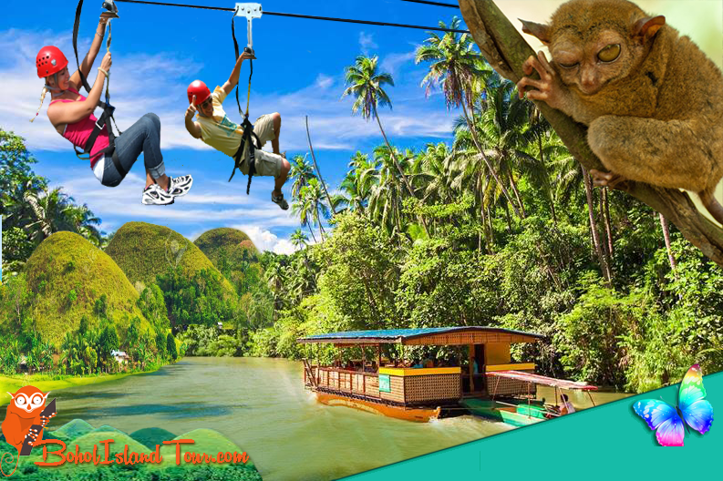
Bohol, Philippines Tourist destination
Bohol has a tremendous lot to offer, so much that many tourists
have a hard time to select the most important things to see in
their limited time. You can easily spend a week on the island,
and just see the highlights. Unfortunately the other side of
Bohol is not yet been explored by most tourists visiting Bohol
like Anda.
You can explore Bohol in different ways, by self-drive car or
motorcycles, travel guided tour, using public utilities vehicle
or rent a car with driver. In a day, you can probably see most
of the famous tourist destinations in Bohol, but it will depend
on the how much time you'll spend in each touristic
place.
If you are coming from Cebu, the route via Tubigon is probably
the cheapest and shortest way to reach Bohol. If you arrive
early in the morning in Tubigon, you can easily tour the most
tourist destination in Bohol via Sagbayan and then proceed to
Carmen, Bilar, Sevilla, Loboc, Tagbilaran and Panglao. To have a
hassle free trip, you can contact tour operators or rent a car
or van company beforehand and you can ask them to pick you up at
Tubigon port.
15 Best Bohol Tourist
Spots Every First-Timer Should Visit
1. Panglao Island
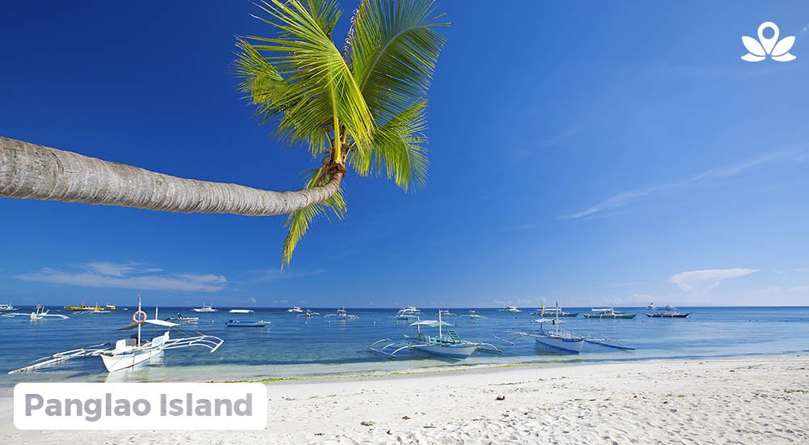
If you’re the
type
of traveler who loves the beach, Bohol
is a catch. Known for
its white-sand beaches, islands, and diving sites, the
province never disappoints its visitors
especially if we’re talking about the Panglao Island—Bohol’s
very own piece of Boracay. Aside from
the stunning beaches, its marine life makes it a great
snorkeling and diving spot as well.
2. Chocolate Hills
Chocolate
Hills is
the most famous Bohol tourist
destination. There are more than 1,000 symmetrical mounds,
conical and dome-shaped that most people
liken them to Hershey’s Kisses. It is called the Chocolate
Hills not because it’s made of chocolate
but because of its color.
In the rainy season, the grass blanketing the hills gives
them a soft and lush appearance. While in
the summer, the vegetation dies off and turns to a
chocolatey brown hue, giving them their name. For
a more detailed guide to Chocolate Hills, read this.
3. Hinagdanan Cave
One of the
most
beautiful Bohol tourist attractions is
Hinagdanan Cave. It features a pool of clear water where you
can swim under the stunning stalactites
and stalagmites.
Located in Dauis, it is said to have been accidentally
discovered by a farmer who built a ladder to
access the cave, thus the name. The light filters through
the cave entrance, filling the whole area
with a soothing and otherworldly glow.
4. Loboc River
A Bohol tour
wouldn’t be complete without hopping on the
famous Loboc River Cruise. Tour guides usually bring their
guests here for lunch while exploring the
Loboc River. At the middle of the tour, your cruise will
stop by at a place where the locals will
play musical instruments and perform traditional dances.
5. Bamboo Hanging Bridge
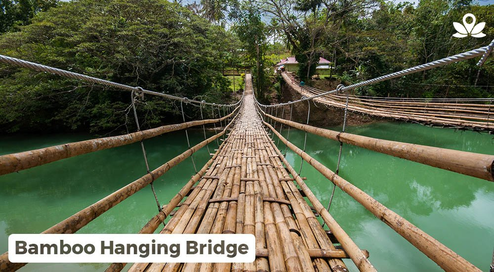
Sure hanging
bridges are not new sights in the Philippines
but have you seen one that’s made entirely out of bamboo?
Also called Tigbao Hanging Bridge by the
locals, this hanging bridge is made of woven bamboo straps
and is suspended 83 feet above the Loboc
River. Crossing this hanging bridge lets you see Loboc River
in a different perspective.
6. Man-Made Forest
Man-made
Forest is
a 2-kilometer stretch of mahogany trees.
This forest stands out because of the mahogany trees’
uniformity in height, the spread of its
branches, thickness and design of leaves.
7. Anda Beach
When we say
Bohol
is an island paradise, we mean it. And
guess what, aside from Panglao Island, there’s also another
great tropical Bohol tourist destination
to see. This 1.5km-long white sand beach is one of the best
Anda Bohol tourist spots you should not
miss. Anda Beach offers a more relaxing tropical escape
compared to the famous Alona Beach.
8. Blood Compact Shrine
The Sandugo or
Blood Compact Shrine monument in Tagbilaran
is a landmark at the site of the first international treaty
of friendship between Spaniards and
Filipinos. This Tagbilaran tourist spot depicts Sikatuna and
Legazpi at the famed Sandugo moment.
9. Philippine Tarsier and
Wildlife Sanctuary
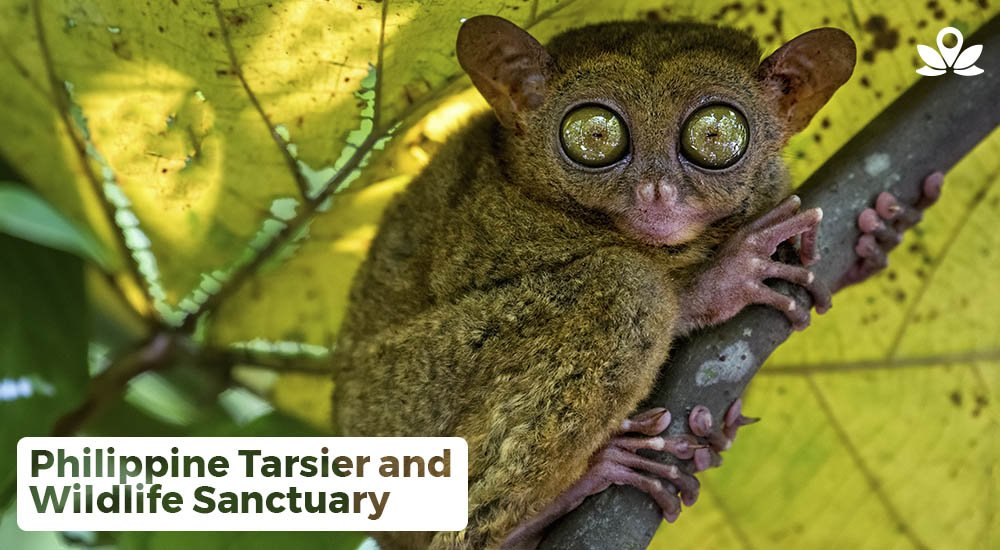
One of the
must-visit Bohol tourist spots is the Philippine
Tarsier and Wildlife Sanctuary. It is a large forest home to
the endangered tarsiers. These 45
million-year-old small nocturnal primates with big round
eyes usually cling to low branches or the
trunks of slim trees. They are very delicate and
emotionally-sensitive creatures that get stressed
easily. According to the tour guides, tarsiers commit
suicide by banging their heads against tree
trunks when they get stressed, so visitors have to keep the
noise level to a minimum. Visitors are
allowed to take pictures except using the flash. And
tarsiers aren’t allowed to be touched.
10. Danao Adventure Park
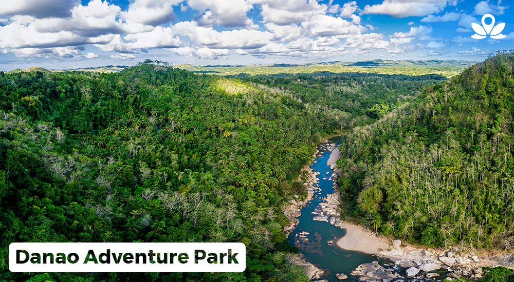
If you’re
looking
for a place where you can experience fun
and exciting activities, Danao Adventure Park is the place
to be. Here you can enjoy amazing
activities here such as the zipline, bungee jumping,
rappelling, paramotoring, root climbing, and
various river activities.
11. Balicasag Island
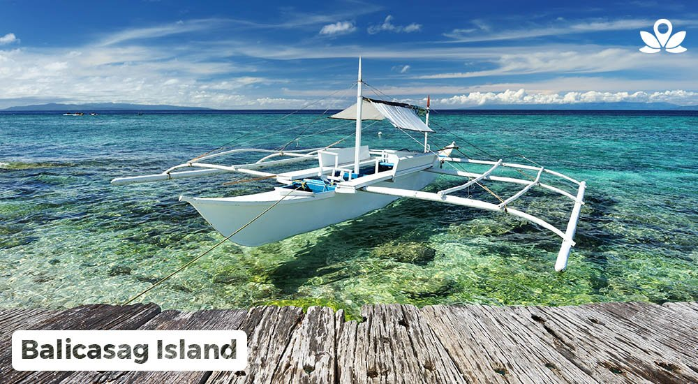
A Bohol tour
wouldn’t be complete without hopping on the
famous Loboc River Cruise. Tour guides usually bring their
guests here for lunch while exploring the
Loboc River. At the middle of the tour, your cruise will
stop by at a place where the locals will
play musical instruments and perform traditional dances.
12. Baclayon Church
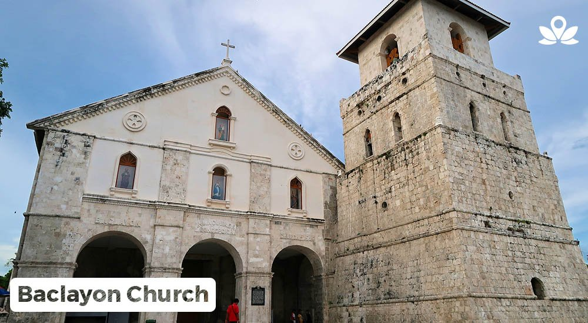
One of the
most
historic places to visit in Bohol is the
Baclayon Church, also known as the Church of Immaculada
Concepcion. Built in 1717, it is considered
to be one of the oldest in the Philippines. Millions of
white eggs were said to have been used as
cement for the church.
13. Dimiao Twin Waterfalls
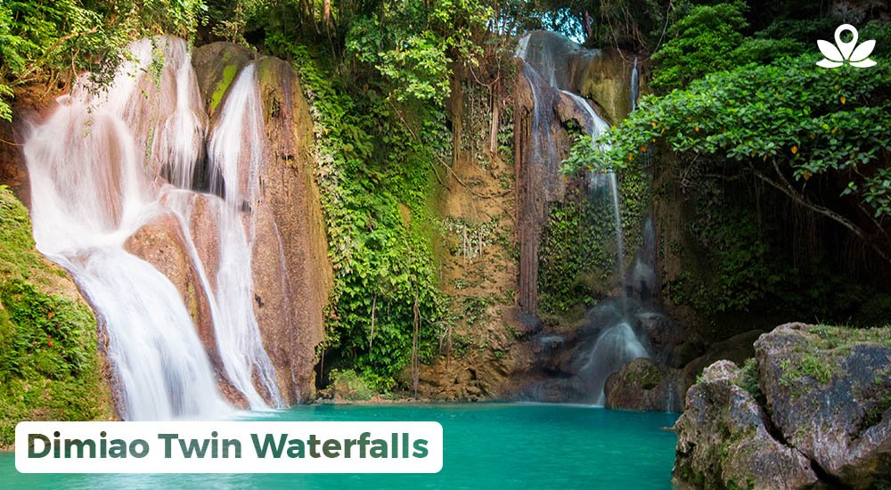
If you’re done
touring the breathtaking Chocolate Hills and
that buwis-buhay picture-taking in Man-Made Forest, it’s now
time to have yourself relaxed at the
famous Dimiao Twin Waterfalls also known as Pahangog Twin
Falls. The twin falls is about 98 feet in
height and surrounded by lush vegetation, including
beautiful orchids. There are also cottages for
rent, with fees ranging from P50 to P100 per day.
14. Alona Beach
Alona Beach is
one
of the most beautiful Bohol tourist
spots you shouldn’t miss. The beach is stunning, the water
is clear blue, and the vibe is a lot like
a tropical paradise. You can find here some of the most
luxurious hotels, bars and restaurants.
15. The Mirror of the World
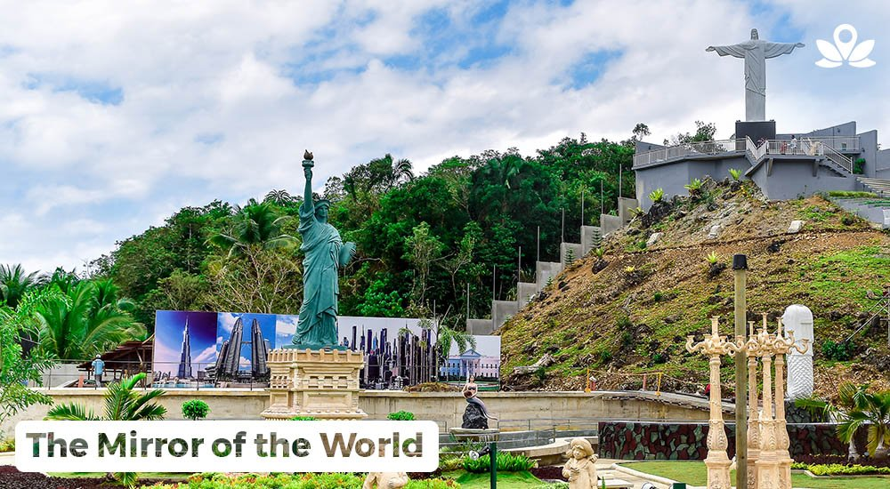
The
3.2-hectare
park Mirror of the World is the result of
love for travel. A couple in Bohol wanted the Filipinos to
experience the world without having to
hop on a plane. This Sikatuna Bohol tourist spot features
some of the most famous landmarks in the
world such as the Statue of Liberty in New York, Christ the
Redeemer in Rio De Janeiro, Merlion in
Singapore, and more, hence the name.
16. Bagobo Beach
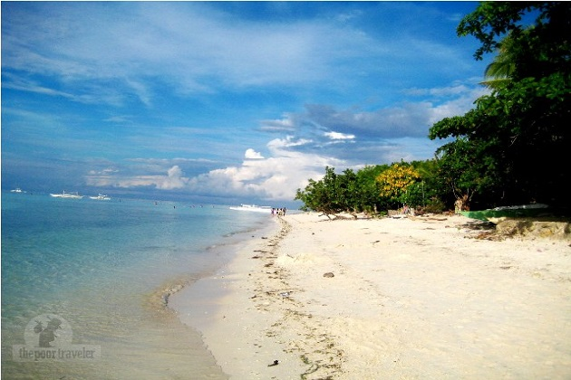
Bagobo Beach
is
located at Barangay Libaong, Panglao
Island. It is a beach with very fine white sand and fringed
by tall coconut palm trees and other
tropical varieties.
The water is crystal clear and reveals an underwater world
of such beauty that made divers and
snorkelers come back from time to time bringing in their
friends and acquaintances.
Slowly the beach has gained recognition and now two beach
resorts cater to guests lured by the
tranquil beauty of the place. Offering first-class
accommodations and excellent services are the
Amarela Resort and the Bagobo Beach Resort.
|
|
| June 24,2015 |
What to see and what to
do in Bohol, Philippines
Bohol has a tremendous lot to offer, so much that many tourists have a hard time to
select those most important things to see in their limited time. You can easily spend a
week on the island, and just see the highlights. See More...
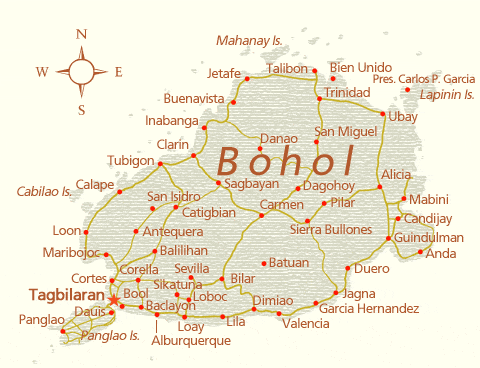
What to see and what to do in Bohol, Philippines
Bohol has a tremendous lot to offer, so much that many tourists
have a hard time to select those most important things to see in
their limited time. You can easily spend a week on the island,
and just see the highlights.
To help you in your selection, we give a short overview of the
more popular tourist destinations, some of which are included in
the organized tours that are offered by various travel agents.
If you have just a few days, you could join with one of those;
however, if you have more time or more adventurous inclined, you
can also visit those places on your own - in which case it is
advisable to arrange for your own transport, which can be a taxi
or rented car or motorbike, as trying to travel the island by
public transportation can take considerable time.
Tagbilaran City
Blood Compact Monument
Blood Compact Monument
Tagbilaran is the capital of Bohol, and its only city. It is
located at the south-western end of the island. Most boats
arrive here, and all scheduled flights land on its one-strip
airport, not far from the city center. Apart from visiting
several shopping malls, such as Bohol Quality, Island City
Mall, and Plaza Marcela, you dine in various restaurants,
visit the Bohol Museum, and a number of interesting
landmarks, such as the Sandugo blood compact site, which is
located in the Bool district of Tagbilaran city. This
monument is included in most tours, and offers a nice view
over the Bohol sea, with Panglao island to the right and
Pamilacan island a bit farther away to the left.
|
|
| 17-12-2014 |
A Mystical tour to
Lamanoc Point of Anda, Bohol
One of the hidden gems of Bohol, Philippines is the Anda peninsula, in the east of
Bohol. Until a few years ago not often frequented by visitors, but this has now changed,
and Anda likely to be the rising star in Bohol tourism in the coming years. Anda has
much to offer to visitors. See More...
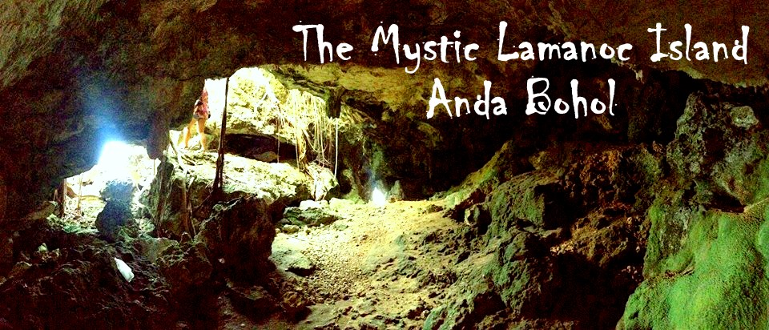
A Mystical tour to Lamanoc Point of Anda, Bohol
One of the hidden gems of Bohol is the Anda peninsula, in the
east of Bohol. Until a few years ago not often frequented by
visitors, but this has now changed, and Anda is likely to be the
rising star in Bohol tourism in the coming years. Anda has much
to offer to visitors. Some world-class white beaches, some still
unspoiled forest, numerous hidden waterfalls, intriguing caves,
and fascinating overhanging rocks, that sometimes make islet
appear to magically hoover above the blue sea. (as close as you
can get on earth to those floating mountains from the movie
Avatar: you almost wouldn't be surprised if they started to
raise and float in mid-air as well.)
One of the top attractions is Lamanoc point in barangay Badiang,
the eastern-most cape of Bohol island Philippines (only parts of
Lapinig island are further east). This cape with its limestone
rocks, caves, and secluded white-sand beaches can be reached via
the main town of Anda by following the coastal road (getting
narrow from that point onward) towards the North. After a few
kilometers, you'll see an entrance on your right hand side, the
starting point of the Lamanoc Island Mystic Tour. Here you can
walk along a very long bamboo pier, that leads through a large
mangrove forest.
Don't walk too fast here, and take some time to study the
fascinating roots of these trees, and try to spot some of the
animals that life between them.
At the end of this pier, you will reach a waiting shed on poles,
where you can wait for one of the small bankas that will bring
you to Lamanoc point. These are the same bankas that the local
fishermen have been using for centuries, and you will literally
sit just a few centimeters above the surface of the sea. After a
short trip, you will reach Lamanoc point.
Lamanoc point is not just a beautiful nature spot, where you can
see various types of plants and animals, including some
indigenous monkeys, but also has a long mystical history
attached to it. Since pre-colonial times, it has been a holy
spot, where local priests and medicine men, called baylan or
tambalan, made their offerings to nature spirits, or diwata, who
where believed to reside here, and where called upon to provide
a bountiful harvest or good catch. These practices continued
long after the Spanish had converted the islands to Catholism,
with people mixing their ancestral believes with the new
teachings. Several balite trees, with their numerous aerial
roots add to the mystic atmosphere.
Some of the caves here served as a burial place, so inside you
can find the remains of several wooden lungon or boat coffins,
so called because they have been from a dug-out log, similar to
the way boats where made, and old earthenware jars.
Unfortunately these jars were broken by misguided treasure
hunters, believing them to contain gold--all they got was human
bones, and they desecrated a human grave and destroyed cultural
heritage while doing so.
Inside a rock shelter, you can see some prehistoric graffiti.
People used hematite (red iron oxide) pigments, found in the
hills of barangay Katipunan, to paint on the walls with their
fingers. A folk story has it that this paint was the blood of
pirates killed by angels. Nature also has worked its art here.
Inside the caves you'll see some interesting formations of
stalactites and stalagmites, including an entire row of small
stalactites that give the impression of shark-teeth. Another
curiosity is a giant clam shell embedded in one of the rocks,
showing that these rocks have raised from the sea in the past.
This process of limestone rocks raising from the sea is still
ongoing, as has been dramatically shown during the October 15,
2013 earthquake on the opposite side of Bohol, when Punta Cruz
was lifted more than a meter, and as a result the coastline
receded some 50 to 100 meters. After such an event, the sea will
start eroding the relatively soft rocks, creating the typical
overhanging walls you can see here.
Tagbilaran City
Blood Compact Monument
Blood Compact Monument
Tagbilaran is the capital of Bohol, and its only city. It is
located at the south-western end of the island. Most boats
arrive here, and all scheduled flights land on its one-strip
airport, not far from the city center. Apart from visiting
several shopping malls, such as Bohol Quality, Island City
Mall, and Plaza Marcela, you dine in various restaurants,
visit the Bohol Museum, and a number of interesting
landmarks, such as the Sandugo blood compact site, which is
located in the Bool district of Tagbilaran city. This
monument is included in most tours, and offers a nice view
over the Bohol sea, with Panglao island to the right and
Pamilacan island a bit farther away to the left.
|
|
| October 17,2013 |
Bohol's Old Churches
Bohol has a number of very old churches, dating back to the early years of the Spanish
colonization of the island. On October 15, 2013, a 7.2 magnitude earthquake destroyed or
heavily damaged most of the historic churches of Bohol. See More...
Bohol's Old Churches
Bohol has a number of very old churches, dating back to the
early years of the Spanish colonization of the island.
On October 15, 2013, a 7.2 magnitude earthquake destroyed the
churches of Loon, Maribojoc, and Loboc, and heavily damaged most
other historic churches in Bohol. In memory of those churches, I
will be placing my collection of photographs on my facebook
account. More images of the churches of Loon, Loboc, Baclayon
and Calape are already available. I invite everybody with
detailed photographs that can be used to document those churches
to share them as well.
Baclayon
The Church of Our Lady of the Immaculate Conception in Baclayon
is considered to be one of the oldest churches in the
Philippines. It is one of the best preserved Jesuit build
churches in the region, although in the 19th century, the
Augustinian Recollects added a modern facade and a number of
stone buildings that now surround the church.
Enjoy Bohol's monuments all year long with this exclusive
Bohol monuments calendar, USD 19.99.
The first Spanish missionaries or doctrineros in the region, Fr.
Juan de Torres and Fr. Gabriel Sanchez, first settled in
Baclayon in 1595. Shortly after their arrival, a visita was
erected on the spot.
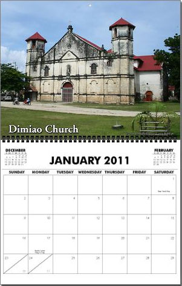
Although Baclayon was the first seat of the Spanish Jesuit
missionaries, fear of Moro marauders soon forced them to move
their headquarters more inland, to Loboc. Only in 1717, Baclayon
became a parish, and construction of a new church commenced.
Some 200 native forced laborers constructed the church from
coral stones, which they took from the sea, cut into square
blocks, and piled on to each other. They used bamboo to move and
lift the stones in position, and used the white of a million
eggs as to cement them together. The current building was
completed in 1727. The church obtained a large bell in 1835. In
the Baclayon church is a dungeon, which was used to punish
natives who violated the rules of the Roman Catholic church.
Next to the church is the old convent, which also houses a small
museum with centuries-old religious relics, artifacts and other
antiquities, dating back to the 16th century. Included in the
collection are an ivory statue of the crucified Christ looking
towards heaven; a statue of the Blessed Virgin, said to be
presented by Queen Catherine of Aragon; relics of St. Ignatius
of Loyola, old gold embroidered ecclesiastical vestments, books
with carabao skin covers, and librettos of church music written
in Latin on sheep skins. Here you can also find the cuadro
paintings made by the Filipino painter Liberato Gatchalian in
1859.
|
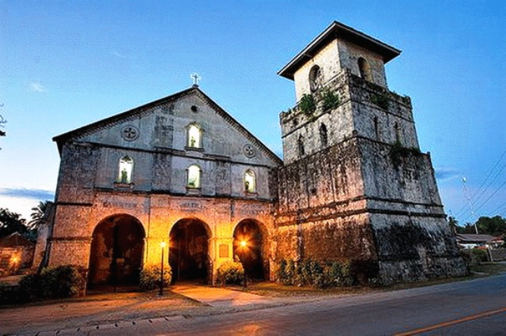
|
| 11-08-2013 |
Boholano Riddles
The Boholano is fond of riddles. Here we present a small collection of riddles, both in
Cebuano and English. See More...
16. Bagobo Beach
It is a beach with very fine white
sand and fringed by tall
coconut palm trees and other tropical varieties. The water
is
crystal clear and reveals an underwater world of such beauty
that made divers and snorkelers come back from time to time
bringing in their friends and acquaintances.
|
| 11-08-2013 |
Resources for Learning
Cebuano
Since Cebuano has no official status, it is not easy to find books that will help you
learn Cebuano. In local bookshops, you'll sometimes find small phrase-books, but they
are not very useful to learn the language. However, good resources are available. We've
prepared on overview of Cebuano Learning resources on this site. See More...
16. Bagobo Beach
It is a beach with very fine white
sand and fringed by tall
coconut palm trees and other tropical varieties. The water
is
crystal clear and reveals an underwater world of such beauty
that made divers and snorkelers come back from time to time
bringing in their friends and acquaintances.
|
| 11-08-2013 |
The Boholano Language
On Bohol, most people speak Cebuano, or, to be more exact, the local dialect of Cebuano,
called Boholano. Many people speak English, and almost all speak standard Cebuano as
well as Tagalog. See More...
16. Bagobo Beach
It is a beach with very fine white
sand and fringed by tall
coconut palm trees and other tropical varieties. The water
is
crystal clear and reveals an underwater world of such beauty
that made divers and snorkelers come back from time to time
bringing in their friends and acquaintances.
|
| 24-10-2011 |
Waterfalls
Bohol is blessed with a large number of romantic, refreshing waterfalls. Most of them
are hidden away, only known to the local people. They will patiently wait for you to
discover them. See More...
16. Bagobo Beach
It is a beach with very fine white
sand and fringed by tall
coconut palm trees and other tropical varieties. The water
is
crystal clear and reveals an underwater world of such beauty
that made divers and snorkelers come back from time to time
bringing in their friends and acquaintances.
|
| 17-10-2011 |
Bohol, Philippines Island
Hopping
Besides a traditional inland tour, you can also enjoy the beauty of the smaller outlying
islands of Bohol. If you are planning to join in on a whale and dolphin watching tour,
you can combine this with island-hopping. See More...
16. Bagobo Beach
It is a beach with very fine white
sand and fringed by tall
coconut palm trees and other tropical varieties. The water
is
crystal clear and reveals an underwater world of such beauty
that made divers and snorkelers come back from time to time
bringing in their friends and acquaintances.
|
| 01-06-2011 |
Getting to Bohol,
Philippines
Bohol is located in the middle of the Philippines, and can be conveniently reached by
air and boat. Bohol is a one hour flight from Manila, or a one and a half hour trip by
fast ferry from Cebu. See More...
16. Bagobo Beach
It is a beach with very fine white
sand and fringed by tall
coconut palm trees and other tropical varieties. The water
is
crystal clear and reveals an underwater world of such beauty
that made divers and snorkelers come back from time to time
bringing in their friends and acquaintances.
|
| 11-05-2011 |
Fiesta Time!
In Bohol, every town and barangay has its own Fiesta. Once a year, the entire town is
decorated for the annual feast, in which there will be plenty of food and drinks. See More...
16. Bagobo Beach
It is a beach with very fine white
sand and fringed by tall
coconut palm trees and other tropical varieties. The water
is
crystal clear and reveals an underwater world of such beauty
that made divers and snorkelers come back from time to time
bringing in their friends and acquaintances.
|
| 19-06-2010 |
Dive Sites near Anda and
Guindulman
The dive sites between Anda and Guindulman offer a fantastic variety of diving for all
levels of diver on a beautiful 14 km reef. Visibility in this area is superb (often 20
meters plus). There is a resident whale-shark, many turtles, a huge Humpback Parrotfish
as well a variety of reef life. There's also seahorses, nudibranches and pipefish for
those who like to find the small things. See More...
16. Bagobo Beach
It is a beach with very fine white
sand and fringed by tall
coconut palm trees and other tropical varieties. The water
is
crystal clear and reveals an underwater world of such beauty
that made divers and snorkelers come back from time to time
bringing in their friends and acquaintances.
|
| 06-12-2006 |
Watching Dolphins on
Bohol
One of the attractions of Bohol is the ability to go dolphin and whale watching on the
Bohol Sea. Joselino "Jojo" Baritua runs a project in which former whale-hunters can
still use their whale and dolphin spotting skills to earn a living, but now to guide
tourists to the best spots for a meeting with those gentle giants and playful jokers of
the sea. See More...
16. Bagobo Beach
It is a beach with very fine white
sand and fringed by tall
coconut palm trees and other tropical varieties. The water
is
crystal clear and reveals an underwater world of such beauty
that made divers and snorkelers come back from time to time
bringing in their friends and acquaintances.
|